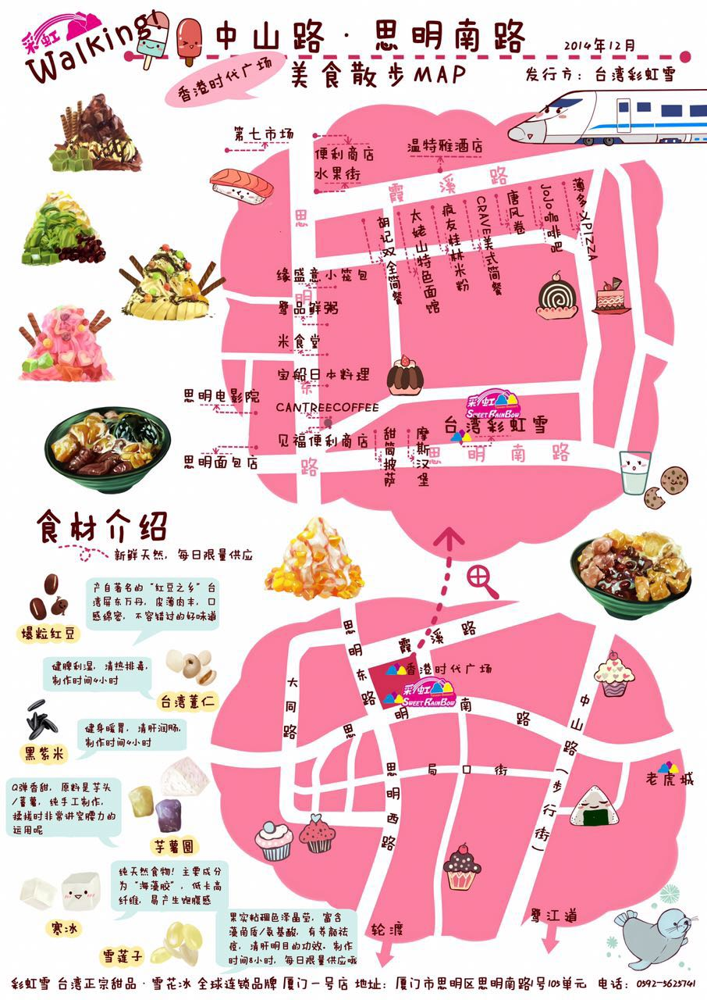

Wuxi Radio & TV Group
Aug. 2016-Sept.2016
Intern, First Focus Program: Aided in news gathering and editing Intern, Auto Times Program : Wrote the preheating manuscripts for Cultural Activities Week of Wuxi Radio & TV Station. Engaged in the operation and innovation of WeChat platform promotion
Taiwan Sweet Rainbow Dessert Shop
Mar.2015-Jun.2015
Assisted in program production process and the organization process of exhibitions Determined the publicity program, drawing the food posters and advertising maps